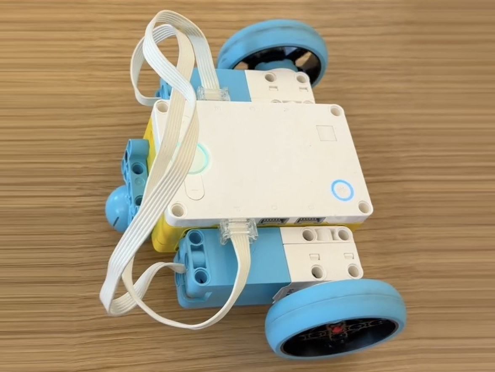

The Simple Car challenge was to build a sturdy LEGO SPIKE Prime car using as few pieces as possible. The car had to drive forward, drive backward, and spin. The challenge asked us to think like an engineer (which connections are structurally sound?) and like an economist (how can the design be simplified to use fewer parts?).
My car uses two motors, each driving one wheel, with the hub mounted on top and a ball caster at the back for support. The video below shows it driving.